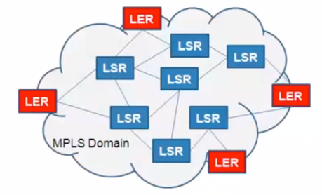
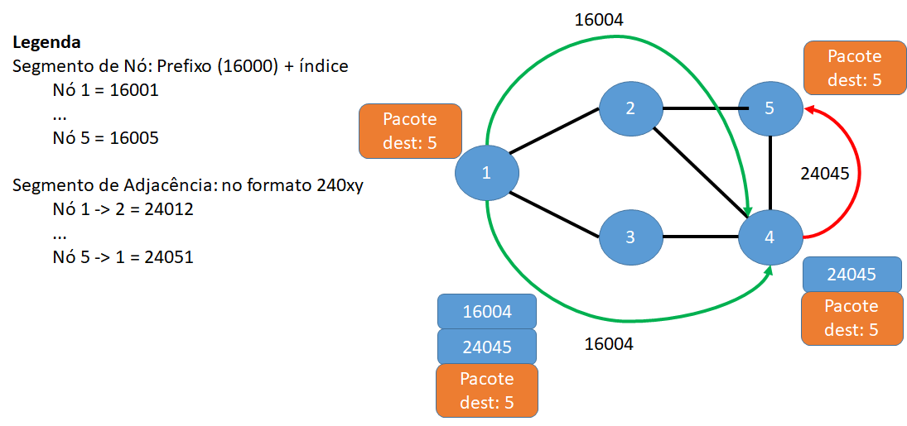
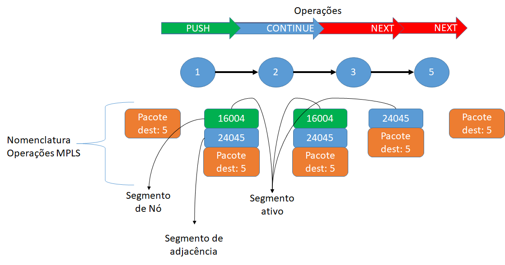

A rede está em constante crescimento
Como vimos anteriormente, nos últimos anos, a rede cresceu enormemente e se tornou muito complexa. O mundo das redes agora é impulsionado por um conjunto completamente diferente de necessidades de negócios, como a capacidade de utilizar cada link de rede totalmente, alto desempenho, escalabilidade, flexibilidade, alta disponibilidade, simplicidade de operação e assim por diante. Esse requisito alterado exige a necessidade de automatizar e gerenciar a rede por software, isto é, o software define a rede, com esse requisito, a arquitetura de roteamento por segmento passou a existir.
O roteamento por segmento evoluiu a partir do MPLS e, para entender o MPLS, é essencial entender o roteamento IP. No roteamento IP, um conjunto de protocolos determina o caminho para o pacote seguir da origem até o destino através de uma série de roteadores em várias redes. Esses protocolos incluem:
- BGP (Border Gateway Protocol)
- IS-IS (Sistema Intermediário - Sistema Intermediário)
- OSPF (primeiro caminho mais curto aberto)
- RIP (Protocolo de Informações de Roteamento)
Multi-Protocol Label Switching or MPLS
MPLS é um mecanismo de encaminhamento baseado em rótulos (labels). Um rótulo nada mais é do que um simples número binário usado pela tabela de encaminhamento do dispositivo receptor para determinar a interface de saída para o próximo salto. O rótulo de entrada é trocado pelo rótulo de saída e o pacote é encaminhado para o próximo dispositivo. O processo é repetido até que o pacote chegue ao seu destino. O MPLS possui 2 tipos de roteadores:
- Label edge router (LER): São roteadores responsáveis pela atribuição de rótulos no pacote de dados.
- Label switch router (LSR): São roteadores responsáveis pela comutação de rótulos.
Exemplo: LER e LSR
Os roteadores de borda (vermelhos) são os LERs e outros roteadores intermediários são LSRs. MPLS começa e termina em um LER. Em um ambiente VPN, o LER é chamado de Provider Edge. E eles executam pesquisa de rota IP (IP route lookup). O LSR retransmite MPLS para dentro e para fora. E realiza pesquisa de etiqueta (label lookup). No MPLS, um pacote é encaminhado usando a tecnologia de rótulo de fluxo (Flow label technology). Os pacotes chegam de uma rede não MPLS, geralmente uma LAN. Todos os roteadores na rede têm sua própria tabela de roteamento. No roteador de borda de etiqueta, existe uma tabela de pesquisa chamada tabela de encaminhamento de etiqueta (Label forwarding table). A tabela de encaminhamento corresponde ou vincula o label a um endereço IP de destino.
A nova necessidade comercial de aplicativos que podem direcionar o comportamento da rede não é fácil de obter em uma infraestrutura de rede IP pura. O roteamento IP carece de flexibilidade, controle de caminho e apresenta alguns problemas de desempenho. Alguns dos problemas com o roteamento IP podem ser resolvidos em uma infraestrutura de rede MPLS pura. O MPLS é mais flexível, a engenharia de tráfego é mais fácil de implementar e os pacotes são encaminhados no caminho predefinido com base no rótulo atribuído ao pacote.
No entanto, o custo de manutenção de um plano de controle mais complexo é alto com o MPLS. A solução para resolver esses problemas é conectar todos os nós em uma rede a um controlador e fazê-los falar um protocolo comum. Só precisamos gerenciar o roteador de origem ou o controlador, o que torna a infraestrutura mais programável e escalável. Essa resposta deu origem à arquitetura de roteamento de segmento que é muito mais flexível, escalável, menos complexa e mais fácil de operar do que o IP Routing ou MPLS.
SR e outros protocolos MPLS: O roteamento por segmentos não necessita da implementação de LDP ou RSVP-TE. Ao invés disso, utiliza um IGP para distribuir as marcações e computar os caminhos, sem a necessidade de alterar a arquitetura MPLS existente. O roteamento por segmentos têm as seguintes vantagens em relação a outros protocolos MPLS:
| Item | Segment Routing | MPLS |
|---|---|---|
| Protocolo de controle | IGP | LDP/RSVP-TE/BGP/IGP |
| Distribuição das marcações | Uma marcação é adicionada para cada adjacência ou nó, e o número de marcações para serem distribuídos é independente do número de túneis, reduzindo a quantidade de recursos necessário. | O número de marcações é distribuído e aumenta conforme o número de túneis, necessitando uma quantidade maior de recursos. |
| Ajustes de caminho e controle | O ingressante executa a re-computação para descobrir os caminhos e ajustar o controle. | Configurações precisam ser entregues nó a nó para ajuste do caminho e controle. |
Segment Routing
O roteamento baseado em IPv6 é um protocolo projetado para encaminhar pacotes de dados IPV6 em uma rede com base nas rotas de origem. O SRv6 baseado no plano de encaminhamento IPv6 permite que a entrada adicione um segmento ao cabeçalho de roteamento (SRH) em pacotes IPv6. Uma pilha de endereços explícita de endereços IPv6 é enviada ao SRH, os nós de trânsito atualizam a lista de endereços IP de destino e deslocam a pilha de endereços para implementar o encaminhamento por saltos. Veremos mais detalhes na sessão de "Arquitetura"
Os segmentos indicam basicamente o caminho exato que o pacote deve seguir na rede. Ou, em termos mais simples, os segmentos são as instruções que o pacote deve seguir para alcançar seu destino. Uma coisa importante a ser observada aqui é que o estado de encaminhamento completo do fluxo de tráfego está no pacote e não na rede.
- O SR possui operações similares aos das redes IP/MPLS convencionais, o empilhamento de rótulos MPLS descreve o caminho pelo qual o pacote deve seguir, ou seja, a lista de seguimentos no cabeçalho do pacote;
- No SR não existem estados por fluxo nos roteadores intermediários, utiliza-se apenas o IGP, logo dispensa o protocolo de distribuição de rótulos (LDP) necessário em uma rede IP/MPLS convencional;
- O roteador de origem conhece todos os identificadores (SIDs) para alcançar o destino, portanto os estados por fluxo são mantidos apenas na origem;
- Quantidade de entradas na tabela SR-FIB em um nó qualquer: N + A.
N = Número de Segmentos de Nó
A = Número de Segmentos de Adjacências) - Segmento ativo:
Redes MPLS: segmento ativo é o rótulo mais externo. Redes IPv6: segmento ativo é um ponteiro para o SID.
Exemplo - Redes MPLS: Encaminhamento de pacote do nó de origem (1) até no de destino (5)

Operações
No SR podemos realizar as seguintes operações:
- PUSH: Inserção em uma lista de segmentos.
Redes MPLS: significa inserção do rótulo na pilha.
Redes IPv6: significa inserir o SID na primeira posição e redirecionar o ponteiro o topo da lista. - NEXT: Ativa o próximo segmento da lista, pois o atual está completo.
Em redes MPLS: significa remover o rótulo mais externo.
Em redes IPv6: significa incrementar o ponteiro. - CONTINUE: Continuação do atual segmento ativo, mesmo sem estar completo.
Em redes MPLS: há correspondência com o processo de comutação de rótulos. Logo, se o próximo salto está no mesmo SRGB, o valor do rótulo é mantido.
Em redes IPv6: significa não incrementar o ponteiro.
Exemplo - Operações: Continuando na topologia da rede do exemplo da figura anterior, agora podemos observar as operações sendo executadas durante cada etapa no encaminhamento do pacote do nó de origem (1) até o nó de destino (5):
Engenharia de Tráfego do Segment Routing
SR-Traffic Engineering (SR-TE) é uma nova técnica de tunelamento do Multiprotocol Label Switching (MPLS) Traffic Engineering (TE), implementada baseada no IGP. O controlador calcula um caminho para um túnel SR-TE e encaminha uma pilha de etiquetas para entrada de um encaminhador. A entrada usa a pilha de rótulos para gerar um LSP no túnel SR-TE, portanto, a pilha de rótulos é usada para controlar o caminho ao longo do qual os pacotes são transmitidos em uma rede. Vantagens do SR-TE: Os túneis SR-TE são capazes de atender aos requisitos para o desenvolvimento rápido de redes definidas por software (SDN), que os túneis do Resource Reservation Protocol-TE (RSVP-TE) não conseguem atender. A tabela abaixo descreve a comparação entre SR-TE e RSVP-TE.
| Itens | SR-TE | RSVP-TE |
|---|---|---|
| Alocação de rótulos | O IGP estendido atribui e distribui etiquetas, cada link recebe apenas um rótulo e todos os LSPs compartilham o rótulo, o que reduz o consumo de recursos e a carga de trabalho de manutenção das tabelas de encaminhamento de rótulos. | O MPLS aloca e distribui etiquetas, cada LSP recebe um rótulo, que consome um grande número de recursos de rótulos e resulta em tabelas com cargas de trabalho pesadas para se manter. |
| Plano de controle | Um IGP é usado, o que reduz o número de protocolos a serem usados. | RSVP-TE é usado, e o plano de controle é complexo. |
| Escalabilidade | Alta escalabilidade. A informação do túnel é carregada nos pacotes, então um dispositivo intermediário não consegue diferenciar um túnel SR-TE. Isso elimina a necessidade de se manter informações de estado do túnel. Apenas as informações de encaminhamento são mantidas, aumentando a escalabilidade. | Pobre escalabilidade. É necessário manter informações de estado do túnel e as entradas de encaminhamento. |
| Ajuste do caminho e controle | Os caminhos podem ser controlados pela operação com as etiquetas no momento do ingresso. Configurações não precisam ser entregues a cada nó, o que aumenta a programabilidade. Quando um nó no caminho falha o controlador recalcula o caminho e atualiza a pilha de etiquetas do nó ingressante para completar o ajuste do caminho. | Independente se for um ajuste normal do serviço ou um ajuste de caminho passivo de um cenário de falha, as configurações devem ser entregues a cada nó. |